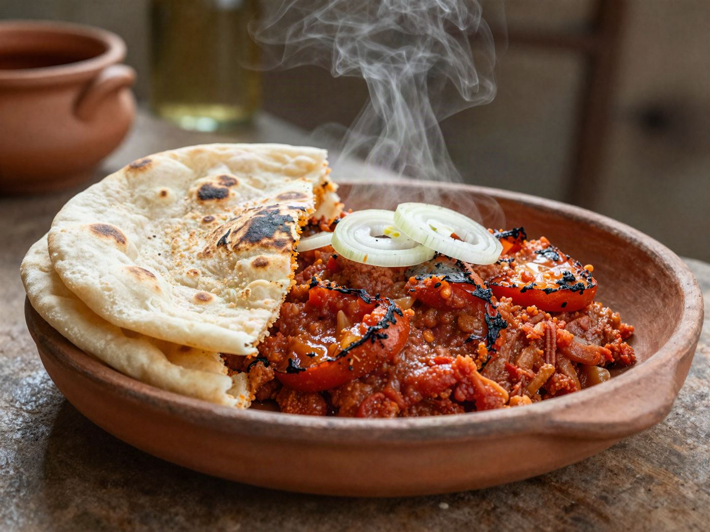

The kitchen ledger
Cooked this morning,
gone by afternoon.
Pots change with the market and the season. Anything marked priced daily — call the kitchen and we’ll tell you what the pot says today.

The kitchen ledger
Pots change with the market and the season. Anything marked priced daily — call the kitchen and we’ll tell you what the pot says today.